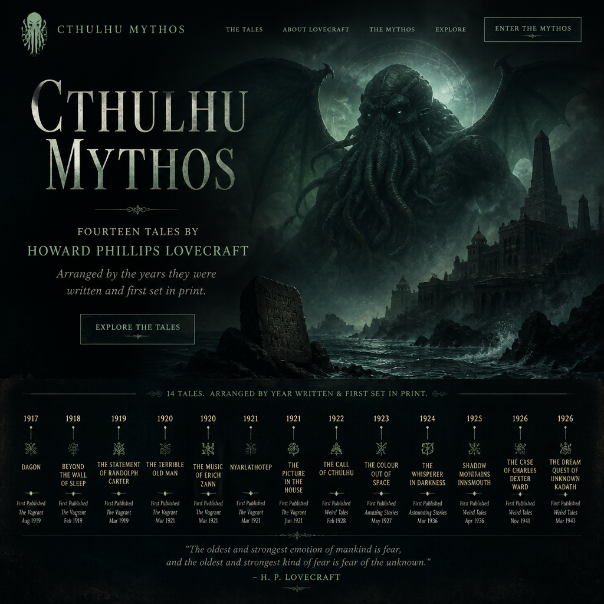
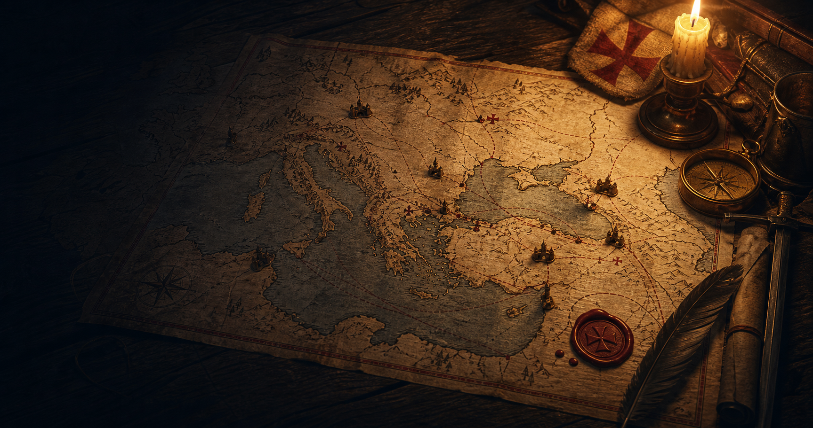
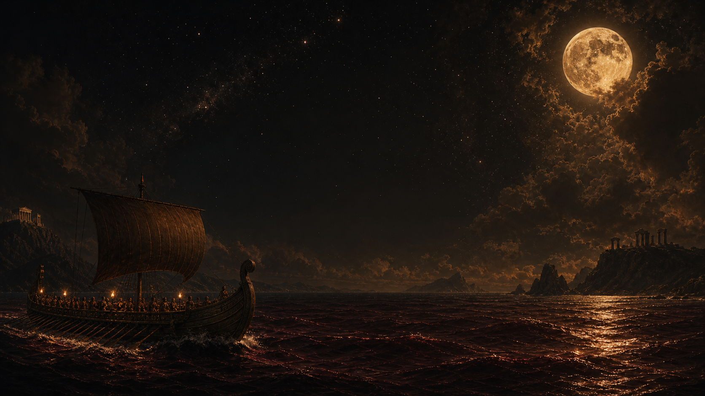

Shelf 01
Research Archives
Interactive reference works, maps, timelines, concordances, and folklore studies.
 The King ShelfStephen King bibliography and searchable reading shelf.
The King ShelfStephen King bibliography and searchable reading shelf.

The Mythos ConcordanceLovecraft entities, settings, tales, and recurring links.
Templar Timeline AtlasCrusades, finance, suppression, and treasure legends. The Franklin ExpeditionRoute map, search expeditions, sightings, and wreck discoveries.
Yokai StudiesJapanese spirits, tricksters, demons, and household presences.
The Franklin ExpeditionRoute map, search expeditions, sightings, and wreck discoveries.
Yokai StudiesJapanese spirits, tricksters, demons, and household presences.

Odyssey JourneyInteractive quiz, story scenes, and voyage map from Troy to Ithaca.